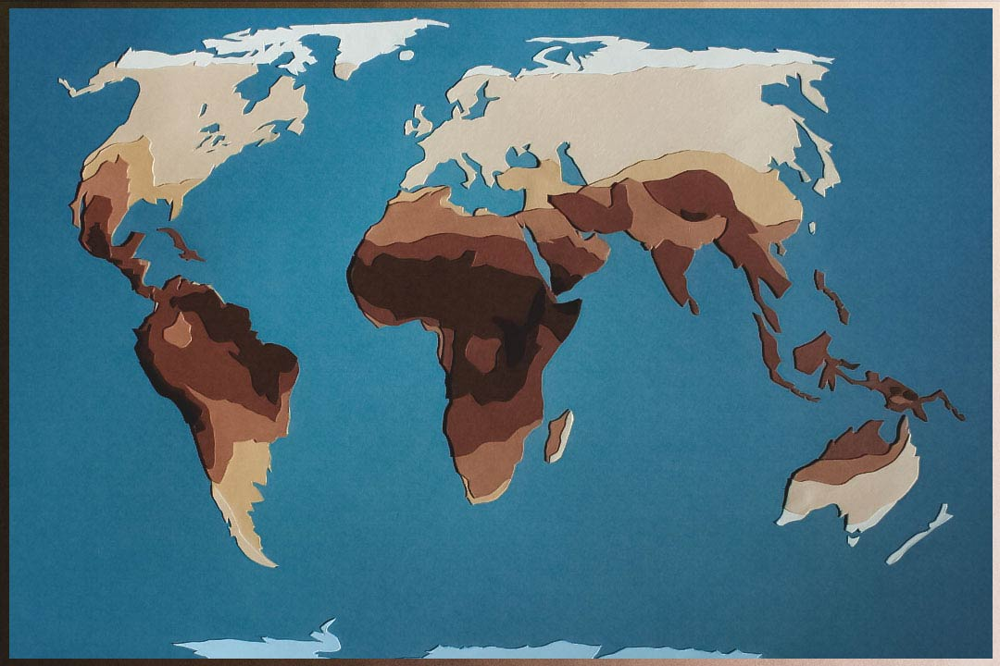

Imagine standing under the blazing sun, where every inch of skin is coming under a constant assault from the ultraviolet (UV) rays from the sun. Millions of years ago, this scenario was a turning point in the evolution of human skin pigmentation.
As early humans lost their dense body fur, probably as an adaptation to cooling while running or walking long distances as newly developed bipeds, a new challenge came about. Without their natural fur, the exposed skin needed to adapt for them to survive in this harsh and unforgiving sunlight. This moment marked the beginning of one of the most significant evolutionary stories, one that still has impacts today: the development of human skin tones.
At first, early hominins probably had lighter skin beneath their dark fur, similar to chimpanzees (which are one of our closest relatives). However, as fur was lost, bare skin required protection from the intense UV radiation of equatorial Africa. Melanin, a dark pigment in the skin, was the key in this adaptation. It absorbed UV radiation, reducing sun damage to our skin and protecting essential nutrients to us, like folate. Folate plays a critical role in DNA synthesis and cell division, making it especially vital during pregnancy. When we are deficit in folate, neural tube defects, such as spina bifida, could occur, severely affecting reproductive success. In this context, darker skin emerged as a powerful advantage under the blazing equatorial sun.
As humans migrated out of Africa, they encountered vastly different environments. Regions closer to the poles received weaker and more seasonal sunlight, and harsher, colder weather. While dark skin was advantageous in the tropics underneath the hot sun, it became a liability in areas with less UV radiation. Vitamin D synthesis, which is significant in calcium absorption and bone health, depends on sunlight exposure. With less melanin, lighter skin allowed more sun rays to penetrate, enabling sufficient vitamin D production even in low-sunlight regions. This adaptation helped prevent conditions like rickets, which could weaken bones and impair mobility.
However, our innate genetics also play a role in our skin tone. Genes like SLC24A5 and OCA2 are central to pigmentation, controlling melanin levels and its distribution around our body. The emergence of lighter skin tones occurred independently in populations across Europe and Asia, which is an example of convergent evolution—different groups that are not completely related and facing similar pressures, who have developed similar adaptations.
Interestingly, different societies also adapted culturally to complement these biological changes. In colder, darker climates, diets rich in vitamin D from fatty fish or fortified foods mitigated the risk of any deficiencies. Similarly, in sunny regions, clothing, shelters, and later, the invention of sunscreen, provided additional protection against excessive UV exposure. Don’t forget: black people can get skin cancer too!
Skin tone evolution is further complicated by patterns of human migration and interbreeding between these newly developed “races”. As populations moved and mixed, they brought their genetics with them, creating a combination of pigmentations in new populations. In some regions, such as the Indian subcontinent, the impacts of both geography and genetics led to a wide range of skin tones within relatively small areas. This diversity reflects both ancient evolutionary pressures and the more recent effects of social and cultural influences.
However, it is important to recognize how skin tone, no matter how big of a role it plays in our society today, is only the result of evolutionary and biological causes. It is only a superficial difference. Our skin tones evolved not as proof of separation but as solutions to survival in varied climates.
Even today, these adaptations continue to shape human health. For instance, modern lifestyles have reduced sun exposure for many people, leading to a rise in vitamin D deficiencies, even among populations with lighter skin. Conversely, darker-skinned individuals in high-latitude regions may face challenges creating enough vitamin D.
The evolution of our skin tones remains a significant chapter in the history of humankind! It speaks to how big of an influence natural selection and the environment has had on us, even if we don’t currently realize it. But more than anything, it should remind us of how our visual differences only emphasize the shared journeys our ancestors had, beyond our phenotypes and skin differences.